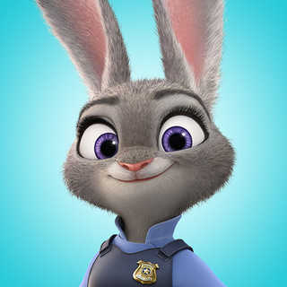

Judy Hopps is the first bunny ever to join Zootopia's police department. Determined to prove herself, Judy jumps at the chance to crack a case, even if it means teaming up with a con artist fox.

Name: Judy
Number: Carrot-Phone
Tasks for Nick
Nick Wilde is a charming, small-time, con artist fox with a big mouth and a lot of opinions. But when a rabbit cop outsmarts him, he finds himself actually helping her solve a mystery.